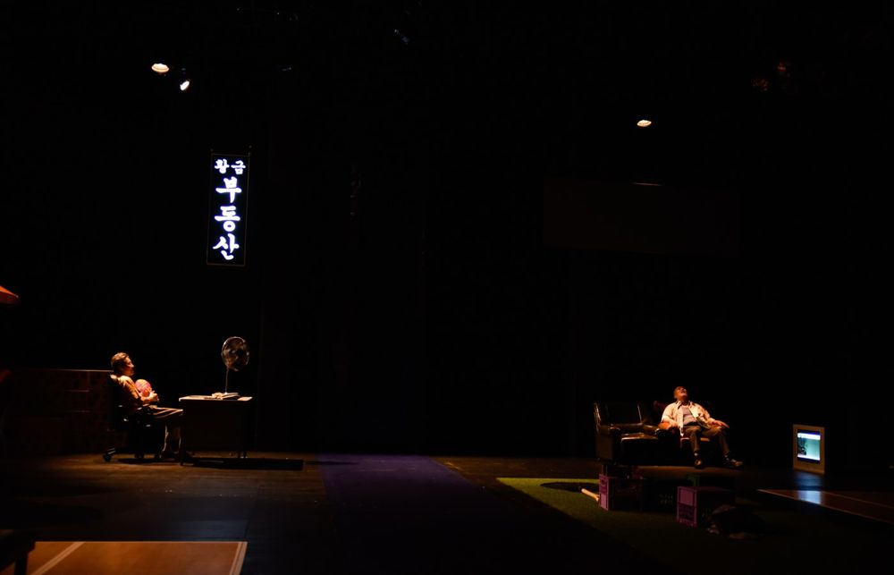

Green Pig > Archive > Wooden Boat

Every year North Korean wooden boats are found on the east coast and on Japan's shores, and people cross the military line bare-bodied, "swimming defections" south and "swimming defections" north. The work focuses on the desperation of those who swim and board the boats, and on the contradictory attitudes of the people around them. It depicts today's Korea, where an unforgettable history, those who live forgetting it and those who use it coexist. Winner of the 9th Byeoksan Playwriting Award.
2021.6.19–27 / Daehangno Arts Theater, Small Hall - 9th Byeoksan Playwriting Award winner
2021.8.18–19 / Chuncheon Festival Theater Momjit - invited, Chuncheon Performing Arts Festival
Playwright: Yoon Mihyun
Director: Yoon Hansol
Assistant director: Jung Yujin
Lighting: Kim Hyeongyeon
Sound: Jeon Minbae
Music: Ombre
Make-up: Jang Gyeongsuk
Costumes: Kim Gyeonghui
Video: Yoon Mincheol
Photography: Shin Jaehwan
Producer & Stage manager: Staff Seoul
Graphic design: Workroom
Cast: Lee Dongyeong, Lee Yeongseok, Kim Munsik, Kim Yonghui, Kwon Taegeon, Hwang Miyeong, Park Jia, Jung Yanga, Lee Seunghun, Lee Juhyeong, Kim Wontae
Sponsored by: Seoul Foundation for Arts and Culture, Seoul Mecenat program
2021.7.5 Criticism, Lee Gyeongmi (Naver blog)
2021.6.29 Audience review (Naver blog)
2021.6.24 Audience review (Naver blog)
2021.6.22 Article (Kyunghyang Shinmun)
2021.6.20 Article (CBS NoCut News)
2021.6.6 Article (CBS NoCut News)
2021.5.25 Article (New Daily)
2021 review, Korean Theatre Review, Autumn 2021
Previous: CAVE-2021 Seoul Version | Next: Home Sweet Home: Dorothy
Back to the archive | Any work
Published 2026.11.13